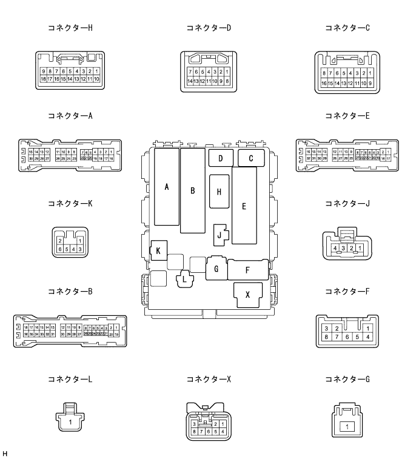

Inspect Main Body ECU
Disconnect the connector to be inspected.
Using SST (Toyota electrical tester), inspect each terminal of the vehicle side connector.
- SST
- 09082-00030
09083-00170


- Standard
Tester Connection (Terminal Symbol) Condition Standard B30 (ECUB) ←→ Body ground Always 11 to 14V G1 (ALTB) ←→ Body ground Always 11 to 14V E17 (E) ←→ Body ground Always Below 1 Ω F5 (ACC) ←→ Body ground IG OFF → ACC ON 1 V or less → 11 to 14V C6 (DCTY) ←→ Body ground Driver side door closed → open 10k Ω or higher → Below 1 Ω A24 (PCTY) ←→ Body ground Front passenger side door closed → open 10k Ω or higher → Below 1 Ω E19 (RCTY) ←→ Body ground Rear right door closed → open 10k Ω or higher → Below 1 Ω V8 (LCTY) ←→ Body ground Rear left door closed → open 10k Ω or higher → Below 1 Ω A7 (BCTY) ←→ Body ground Back door closed → open 10k Ω or higher → Below 1 Ω V25 (LSWD) ←→ Body ground Driver side door lock → unlock 10k Ω or higher → Below 1 Ω V10 (LSWP) ←→ Body ground Front passenger side door lock → unlock 10k Ω or higher → Below 1 Ω X8 (HAZ) ←→ Body ground Electrical key transmitter LOCK or UNLOCK switch OFF → ON 11 to 14V → 1V or less → 11 to 14V
Connect the connector.
Using SST (Toyota electrical tester), inspect each terminal of the connector.
- SST
- 09082-00030
09083-00170
- Standard
Tester Connection (Terminal Symbol) Condition Standard C6 (DCTY) ←→ Body ground Driver side door closed → open 11 to 14V → 1V or less A24 (PCTY) ←→ Body ground Front passenger side door closed → open 11 to 14V → 1V or less E19 (RCTY) ←→ Body ground Rear RH door closed → open 11 to 14V → 1V or less V8 (LCTY) ←→ Body ground Rear LH door closed → open 11 to 14V → 1V or less A7 (BCTY) ←→ Body ground Back door closed → open 11 to 14V → 1V or less V25 (LSWD) ←→ Body ground Driver side door lock status lock → unlock 11 to 14V → 1V or less V10 (LSWP) ←→ Body ground Front passenger side door lock status lock → unlock 11 to 14V → 1V or less V13 (TCAN) ←→ Body ground Back door lock status lock → unlock 11 to 14V → 1V or less